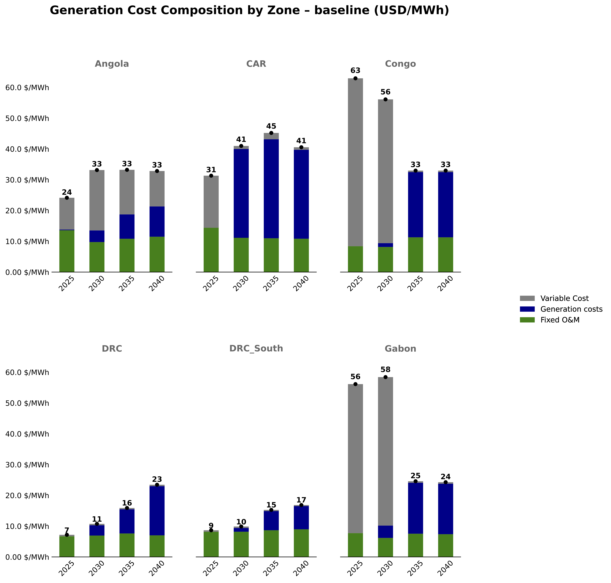
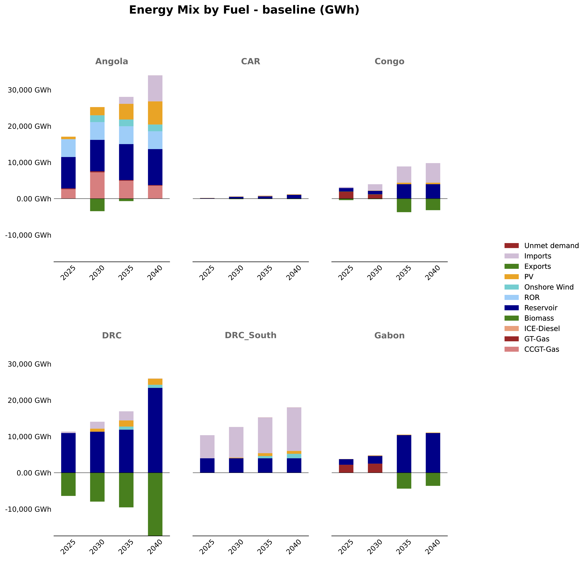
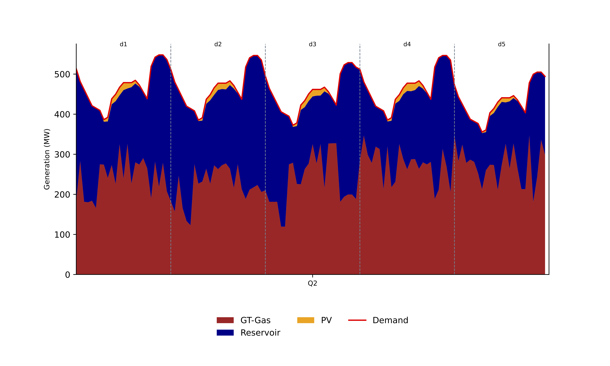

EPM Output Examples#
This page showcases example outputs from EPM to illustrate the model’s capabilities and the types of analyses it supports.
Important: The figures shown here are for illustrative purposes only. The numbers and results should not be used quantitatively as they are based on test data and do not represent actual planning studies.
EPM Objectives#
The Electricity Planning Model (EPM) is designed to answer key questions for power system planners:
Capacity Planning#
What generation capacity should be built? - Optimal mix of technologies (solar, wind, hydro, gas, etc.)
When should new capacity be built? - Investment timeline over the planning horizon
Where should it be located? - Geographic distribution across zones/countries
System Operations#
How will generation be dispatched? - Hourly operation of power plants
What are the electricity costs? - Generation costs by zone and technology
How much will the system cost? - Total NPV of capacity expansion and operations
Policy Analysis#
What is the impact of renewable targets? - Achieving minimum RE shares
What are the benefits of interconnections? - Cross-border power trade
What are the CO2 implications? - Emissions under different scenarios
Example Outputs#
1. Capacity Mix Evolution#
Shows how the generation capacity mix evolves over time across scenarios.

System-wide capacity evolution comparing different scenarios (baseline, no transmission, optimal transmission).
2. Capacity Mix by Zone#
Shows the percentage breakdown of capacity by technology for each zone.

Capacity mix evolution by zone showing the share of each technology over time.
3. System Cost Comparison#
Compares the Net Present Value (NPV) of total system costs across scenarios.

NPV of total system costs comparing different planning scenarios.
4. Generation Costs by Zone#
Shows how generation costs ($/MWh) evolve over time for each zone.

Evolution of generation costs per MWh by zone over the planning horizon.
5. Energy Mix Evolution#
Shows how energy generation (GWh) by technology evolves over time.

Energy generation mix by zone showing total GWh from each technology.
6. Dispatch Analysis#
Shows hourly dispatch of generation resources for a representative period.

Hourly dispatch for Gabon in 2025, showing how different generators meet demand throughout representative days.
7. Interactive Map#
EPM generates interactive HTML maps showing the power system geographically.
Open Interactive Map in New Tab
Interactive map showing generation capacity, interconnections, and power flows for 2040.
Output Categories#
EPM produces outputs organized in the following categories:
Category |
Contents |
|---|---|
1_capacity |
Capacity mix, new capacity additions, capacity evolution |
2_cost |
System costs, NPV analysis, generation costs per MWh |
3_energy |
Energy generation, energy mix by technology |
4_interconnection |
Cross-border flows, transmission utilization |
5_dispatch |
Hourly dispatch patterns for representative periods |
6_maps |
Interactive geographic visualizations |
Understanding the Results#
Scenarios#
EPM typically compares multiple scenarios:
Baseline: Reference case with current policies
NoTransmission: No new interconnection investments
TransmissionOptimal: Optimized transmission expansion
Time Periods#
Results are provided for:
Each model year (e.g., 2025, 2030, 2035, 2040)
Representative days for dispatch analysis
NPV totals for cost comparisons
Zones#
Results are disaggregated by:
System-wide: Total across all zones
By zone: Individual country/region results
By generator: Plant-level details
Next Steps#
For more details on EPM outputs, see:
Output Overview - Complete list of output files
EPM Output Files - Detailed output descriptions
Tableau Visualization - Using Tableau for analysis